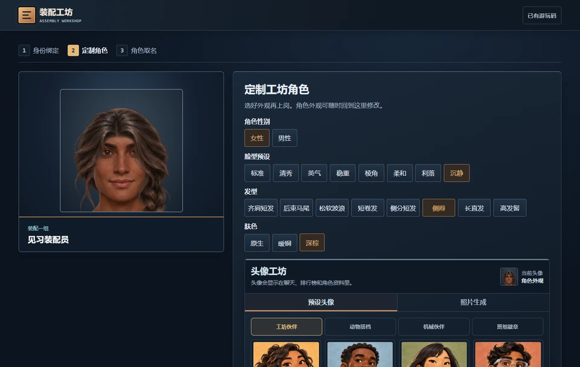
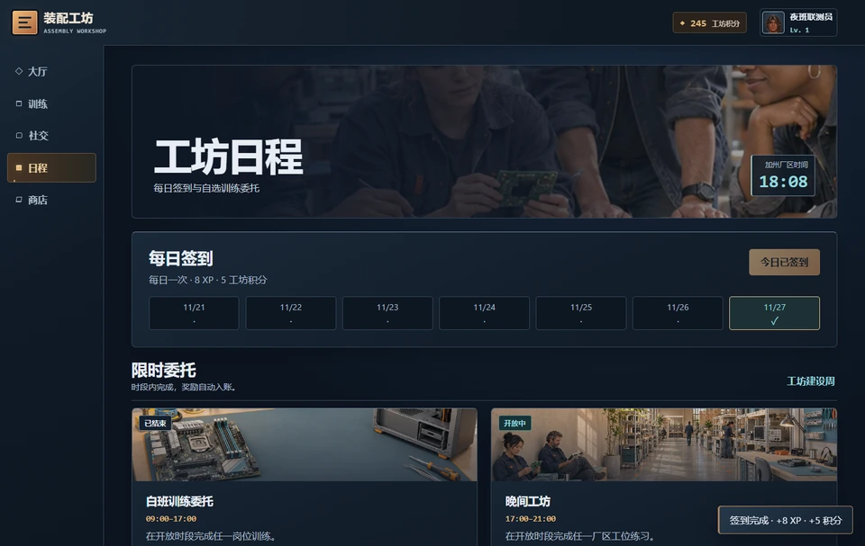

创建角色时能看见每次改动
创角依次选择体验班组、定制外观和设置昵称。脸型、发型、肤色各自独立，修改其中一项时会在同一个预览里立即更新。角色外观和社交头像都能回到「角色与存档」重新选择。


3D 岗位训练 / 网页游戏
走进可探索的 3D 电子工坊，在七种工作台练习装配、质检和校准。回收零件、完成委托，再把进度带到下一班。
在线试玩 ChatGPT Sites 试玩总览显示七个编号工位，玩家可以直接选点，也可以切换第一人称走到工作台。仓储、装配、质检、封箱和校准各有自己的操作，地图上的区域与工位面板保持对应。

新版电脑界面保留左侧 3D 视野和右侧导航。进入工位后，镜头转向台面，右侧切换成当前工单、物料、目标位置和按键提示，方便一边观察设备，一边确认手上的工序。
在总览和步行间按 V 切换，步行用 WASD 移动，靠近工位按 E 开始。装配时用 1–3 选料，按 Z、X 或 C 选槽位，R 重试当前步骤。机械臂校准用方向键调整、回车检测。H 打开操作指南，Esc 离开工作台。

以「装配底板 A12」为例，工单先让玩家从托盘选 B16 内存条，核对 DIMM 插槽。内存入位后，再装固态硬盘，最后固定螺丝。鼠标可直接拖放，键盘和触屏可以先选物料，再选槽位。

把 B16 放到硬盘位，工位会标出错处并提示查看 DIMM 丝印。重试只回到当前工序，已完成的步骤仍然保留。三道工序结束后，结算同时显示得分、返工次数和用时，方便下一轮对照。


创角依次选择体验班组、定制外观和设置昵称。脸型、发型、肤色各自独立，修改其中一项时会在同一个预览里立即更新。角色外观和社交头像都能回到「角色与存档」重新选择。

日程按加州厂区时间显示每天签到及当前开放的委托。白班对应训练，晚间对应厂区工位。时段内完成指定练习后，奖励自动计入存档，返回日程即可检查当天进度。

在厂区找到的零件，可拿到主板装配台或校准台的「零件组装」页安装。装满后，设备在场景中亮起指示灯，进度记录在存档里。
两位玩家可从联机大厅进入交接工位。工单、质检记录和当前进度构成交接内容，让合作围绕双方可核对的信息展开。工位认证与兑换流程属于游戏内模拟。